滚轮 / 双指缩放 ｜ 拖动平移 ｜ 双击重置 ｜ Esc 关闭
独立视觉测试版本 尚未集成正式彩平 原始数据问题未解决 本页用于人工与外部视觉审核，所有图像为同一渲染参数下的真实输出。
将 V1.5 已认可的真实材质与光影方案推广到全部九件衣柜，形成配置驱动、可复用、可测试的材质渲染组件。 仅限九件衣柜，未扩大至其他家具，未集成正式彩平。
| 项 | 内容 |
|---|---|
| 材质配置 | v16/materials.json —— 材质/光影参数与柜体几何完全分离，渲染函数内零硬编码柜体参数 |
| 九件识别 | #2 #11 #13 #18 #19 #30 #34 #35 #39（与只读数据一致） |
| 纹理尺度 | 物理 1:1（1830mm / 1024px）⇒ 九件 tile_px 恒为 1098px，单一缩放系数 1.0723 |
| 木纹方向 | 沿柜体长轴（视觉规则，与柜门开启方向无关） |
| 光影 | 统一示意光源（左上）、阴影强度 0.20、柔和度 1.6 —— 视觉示意参数，非现场采光模拟 |
| 自动测试 | PASS 14 / FAIL 0（含 V1.5 同条件回归：均差 8.3~10.7） |
| 审美状态 | PENDING HUMAN REVIEW —— 本轮未调用任何视觉模型（按授权停用） |
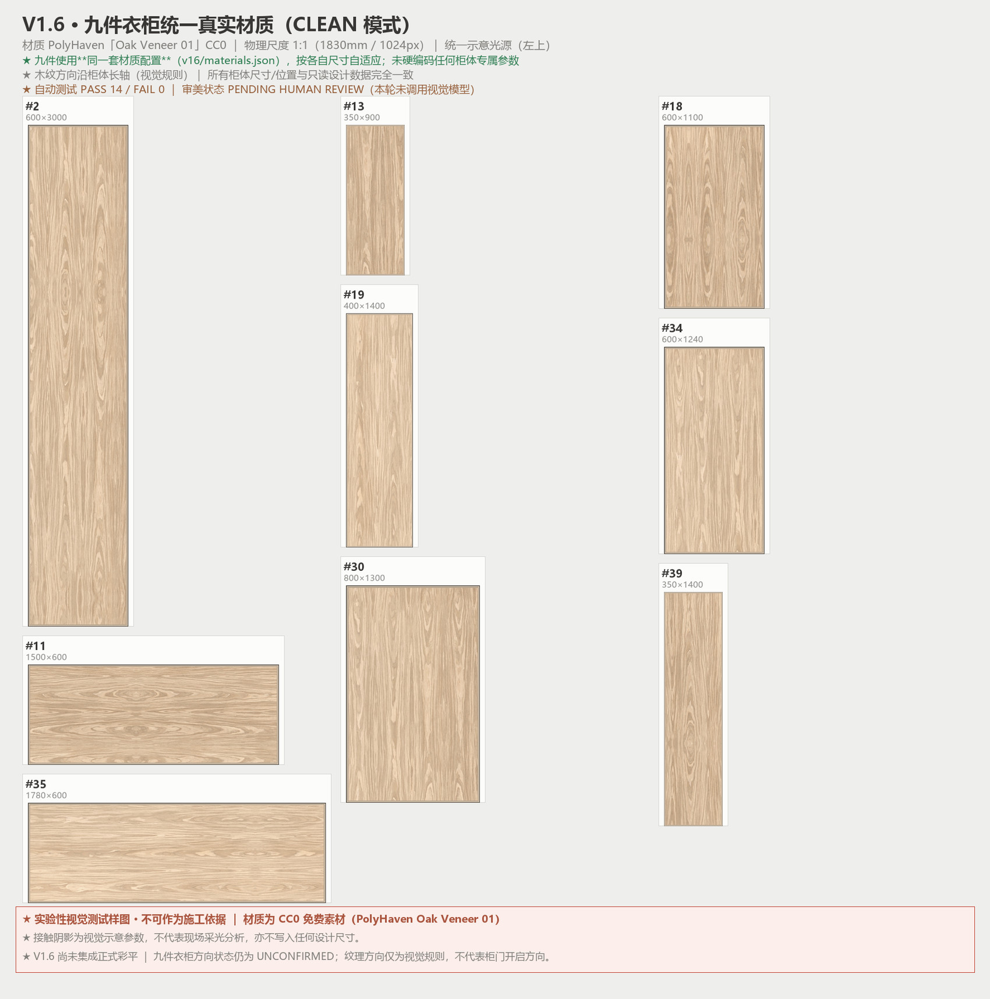
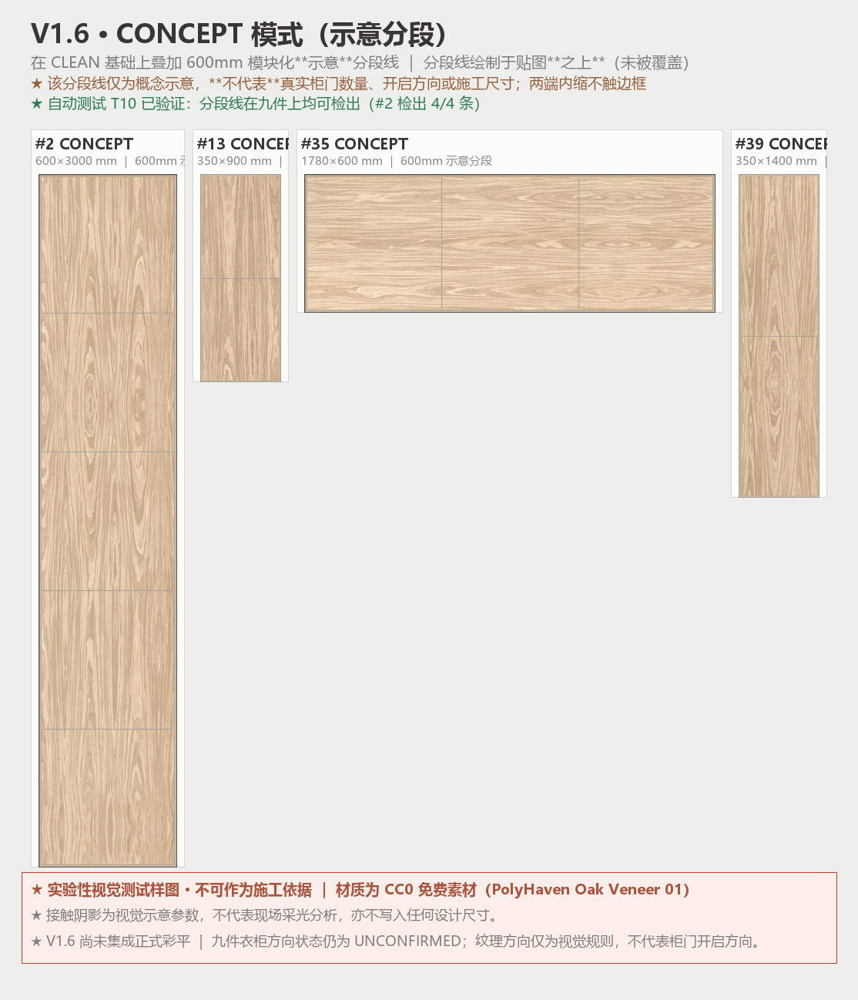
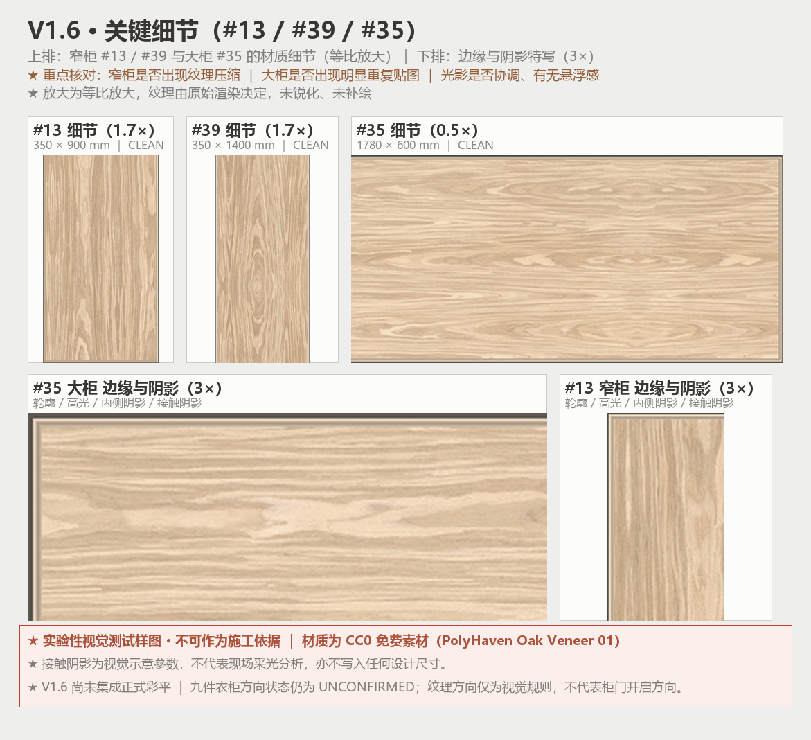
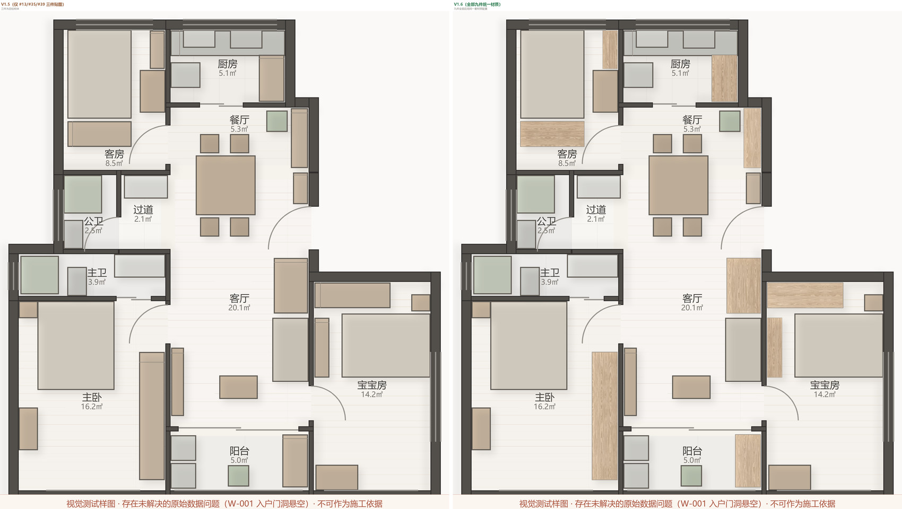
| 项目 | 内容 |
|---|---|
| 素材 | Oak Veneer 01 ｜ 作者 Jenelle van Heerden |
| 来源 | PolyHaven ｜ https://polyhaven.com/a/oak_veneer_01 |
| 授权 | CC0（等同公有领域）｜ 可商用 ｜ 无需署名 ｜ 允许再分发 ｜ 已读授权原文核验（2026-10-14） |
| 物理尺寸 | 1830 × 1830 mm ｜ 1024×1024 JPG ｜ SHA-256 c14681f7… |
| 候选材质 | White Oak Veneer（500mm，candidate_not_default，本轮未用于渲染） |
针对「整体过于平面化、缺少真实质感」的人工反馈，从程序模拟木纹升级为真实材质贴图 + 空间光影。 仅测试 #13 / #35 / #39 三件，未推广至其余衣柜，未集成正式彩平。
| 版本 | 做法 | 实测（#35 柜面） |
|---|---|---|
| A · V1.4.1 | 程序生成线条木纹（对照） | RGB(212,195,174) ｜ 亮度 197 ｜ 内部 σ = 1.6（数值上近乎纯色平板） |
| B · V1.5-T | 真实橡木贴图，物理 1:1 尺度映射 | RGB(223,196,166) ｜ 亮度 200 ｜ 内部 σ = 12.6 |
| C · V1.5-L | B + 表面微观质感 / 边缘受光 / 接触阴影 | RGB(223,196,165) ｜ 亮度 200 ｜ 内部 σ = 12.9 |
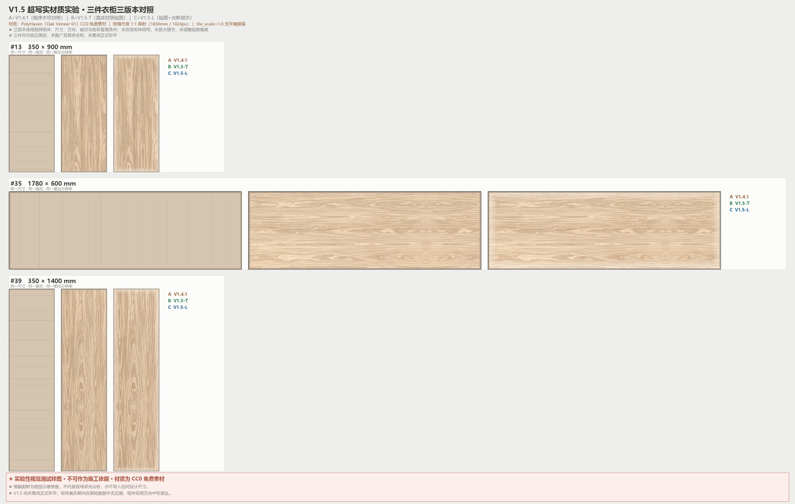
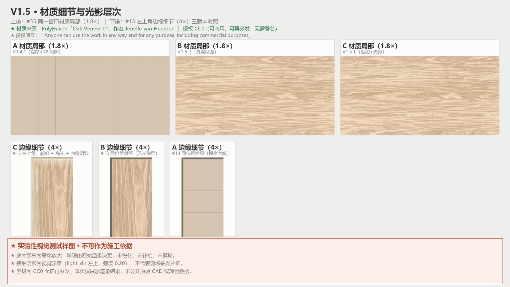
| 项目 | 内容 |
|---|---|
| 素材 | Oak Veneer 01（浅橡木贴面） |
| 来源 | PolyHaven ｜ https://polyhaven.com/a/oak_veneer_01 |
| 作者 | Jenelle van Heerden |
| 授权 | CC0（等同公有领域）｜ 原文：「Anyone can use the work in any way and for any purpose, including commercial purposes」｜ 无需署名 ｜ 允许再分发 |
| 授权核验 | 已读取 https://polyhaven.com/license 原文（2026-10-14），非凭网站名推断 |
| 实际物理尺寸 | 1830 × 1830 mm（决定纹理比例映射） |
| 文件 | 1024×1024 JPG ｜ SHA-256 c14681f7… |
针对上一轮视觉审核提出的 F1（细纹贴合/过密） 与 F2（主纹局部过深） 两处缺陷做定点修复。 仅改木纹生成规则，未重构渲染器、未改动柜体结构。
| 缺陷 | 根因 | 修复 |
|---|---|---|
| F1 细纹贴合 | 细纹与主纹**独立生成、无跨层约束** ⇒ 必然出现两条纹贴合； 且细纹层间距下限仅约 17mm |
新增 45mm 最小跨层距离；细纹间距系数 0.52 → 0.75 实测线位置最小间距 0mm → 46mm（#13: 3→48 ｜ #39: 0→49） |
| F2 主纹过深 | 主纹 alpha 在 0.13~0.26 独立随机，**无相邻约束** ⇒ 可连续取高值 | alpha 上限 0.26 → 0.21 + 相邻平滑（只削峰） 实测深度 max/median 1.44 → 1.26（判据 ≤1.5） |
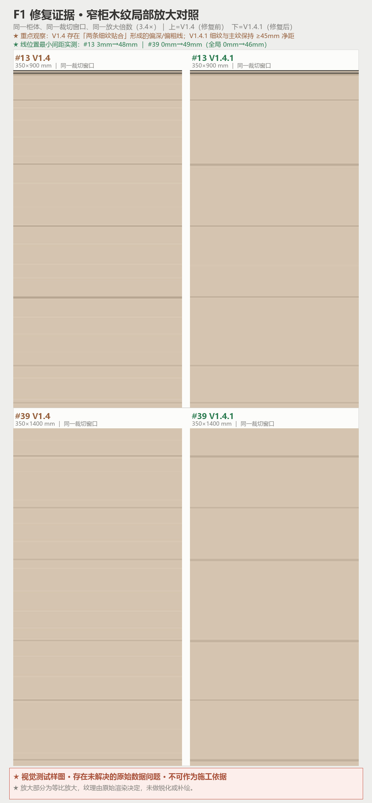
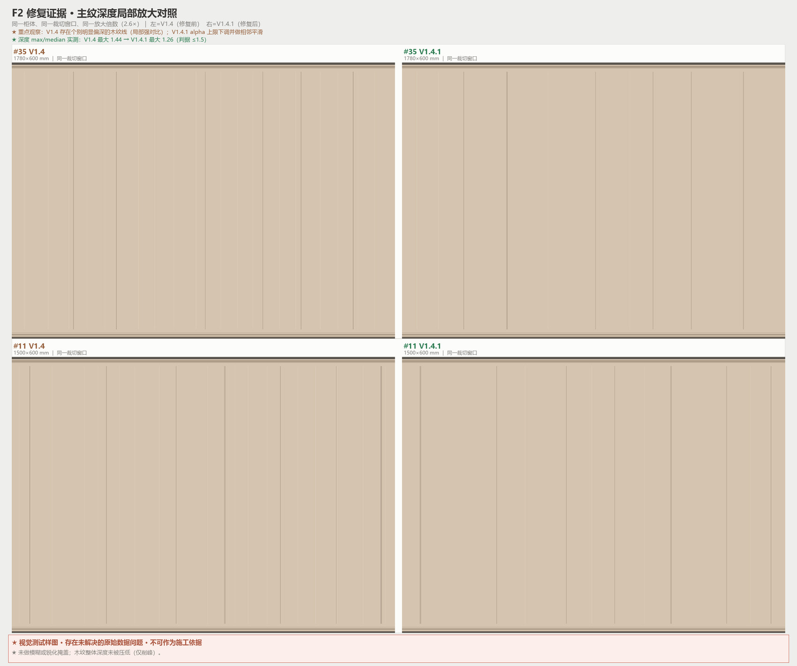
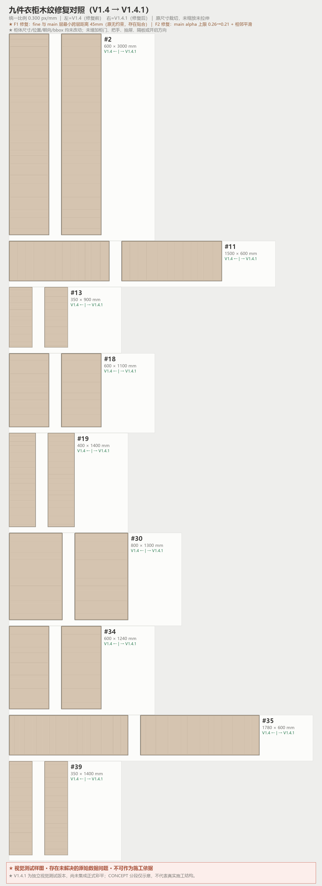
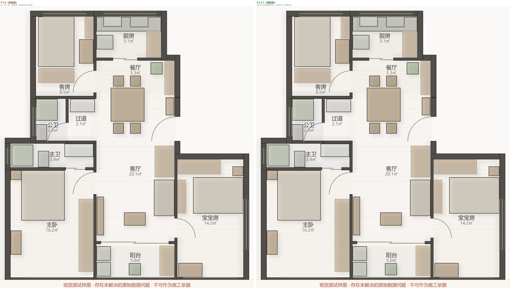
本次升级针对上一轮审核提出的三个问题，仅优化视觉表现，未改动任何真实结构、尺寸、位置与朝向。
| 上一轮审核意见 | V1.4 对策 |
|---|---|
| ① CLEAN 木纹过于均匀，接近规则条纹 | 改为多尺度非等距木纹：主纹 + 细纹两层，间距浮动、线宽与深浅分档 |
| ② 柜体缺少明暗层次，材质偏平 | 加大框/面明度差，新增边缘柔和高光与极轻内侧阴影（均为 1–2px 细线） |
| ③ CONCEPT 模块分段线不够清晰 | 分段线由 1px/浅色 提升为 2px/明确对比，两端内缩不触边框 |
左右两幅为同一户型、同一渲染参数；差异仅来自 9 件衣柜组件，其余家具逐像素一致。
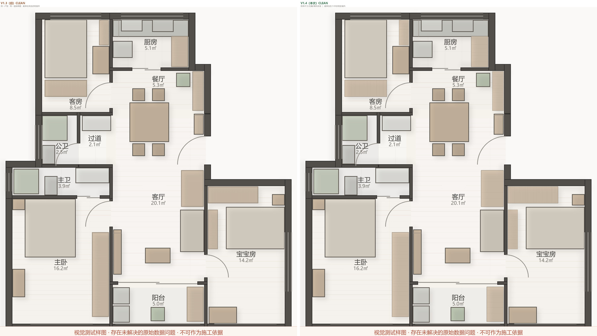
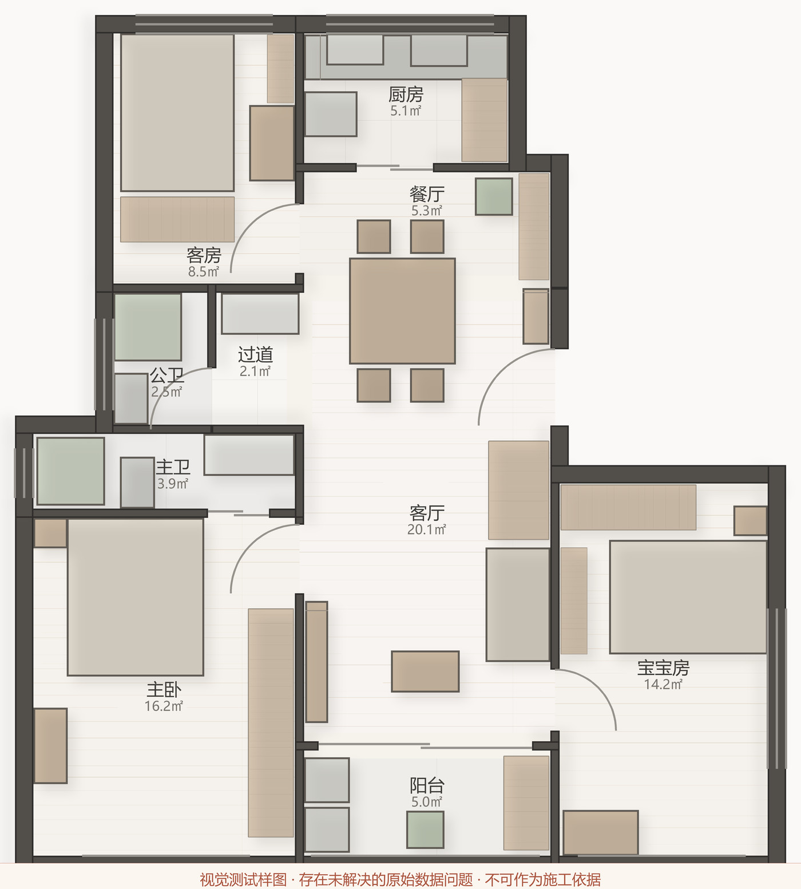
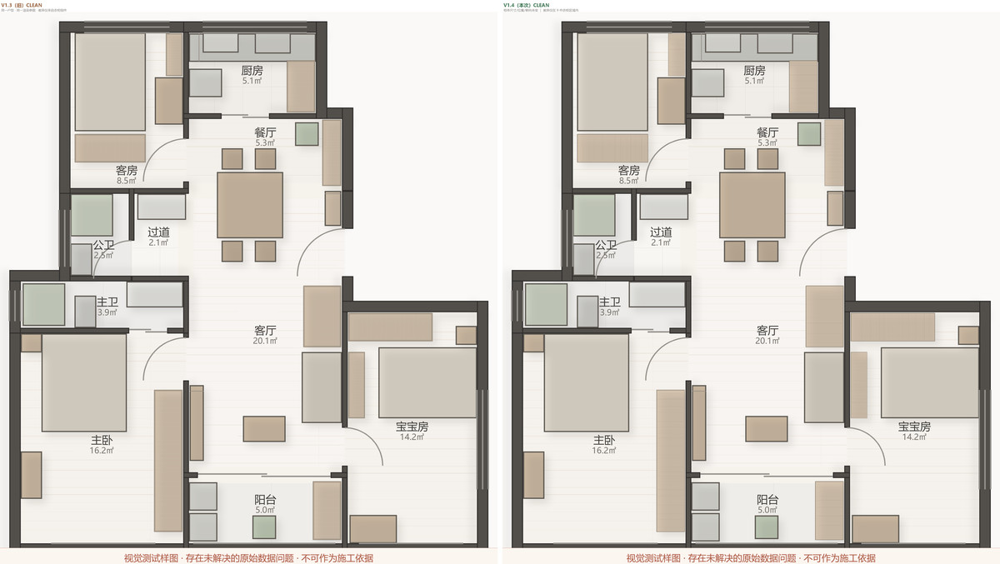
九件衣柜使用同一套材质规则，并按各自尺寸自适应：窄柜不出现过密木纹与边框挤压，宽柜不出现机械重复条纹。 每件左侧为 V1.3，右侧为 V1.4，原尺寸裁切、同比例、未缩放未拉伸。
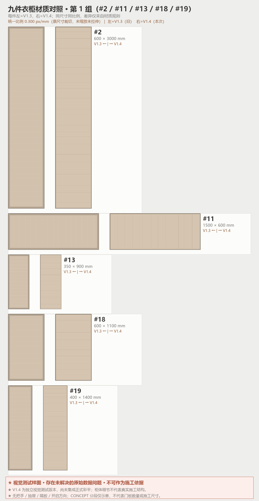
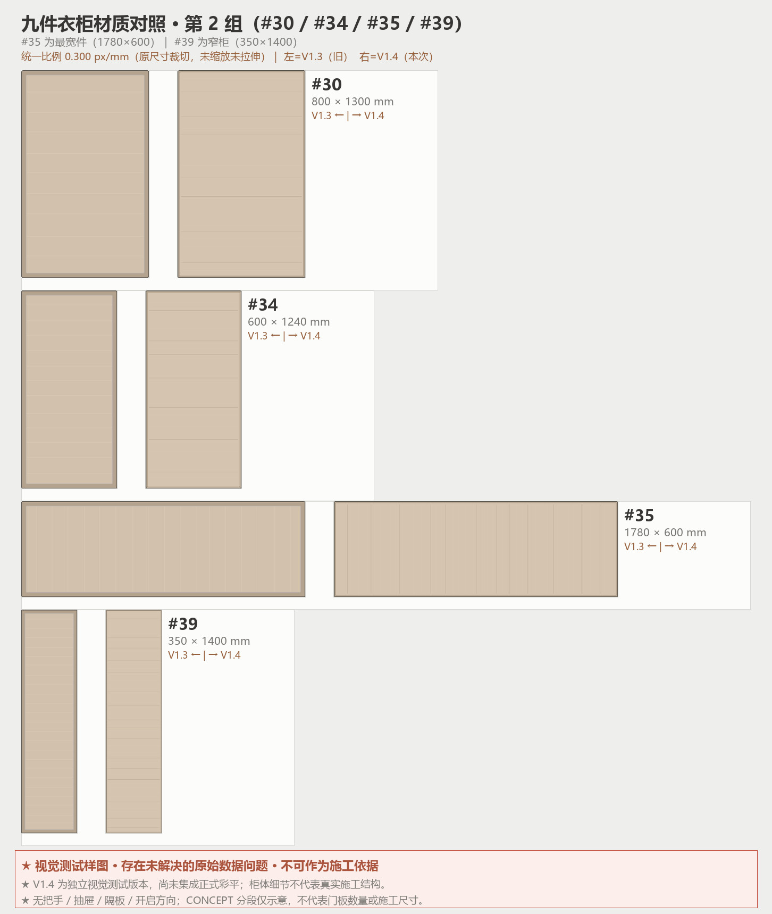
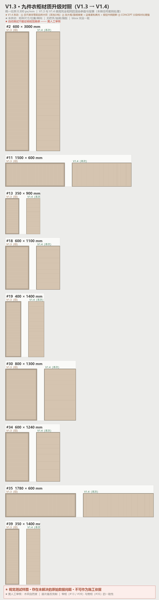
| 编号 | 尺寸 (mm) | 特点 | 木纹层次 |
|---|---|---|---|
| #2 | 600 × 3000 | 最细长件，长轴竖直 | 5 层 |
| #11 | 1500 × 600 | 横向中等 | 5 层 |
| #13 | 350 × 900 | 窄柜，木纹间距取下限防过密 | 5 层 |
| #18 | 600 × 1100 | 纵向中等 | 5 层 |
| #19 | 400 × 1400 | 窄长 | 5 层 |
| #30 | 800 × 1300 | 近方正，木纹间距取上限防过粗 | 5 层 |
| #34 | 600 × 1240 | 纵向中等 | 5 层 |
| #35 | 1780 × 600 | 最宽件，主纹 + 细纹双尺度 | 5 层 |
| #39 | 350 × 1400 | 窄柜，同上 | 5 层 |
重点查看：#13 / #39 窄柜在正常观看比例下是否清楚、#35 大柜是否出现机械重复条纹、 CLEAN 木纹质感、以及 CONCEPT 分段线的示意性质。 以下图像均由已脱敏的审核图裁切放大得到，未重新设计、未伪造细节。
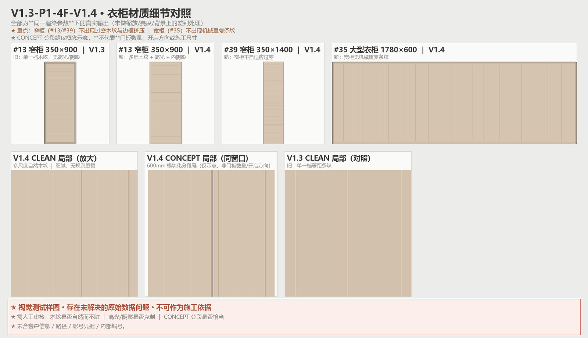